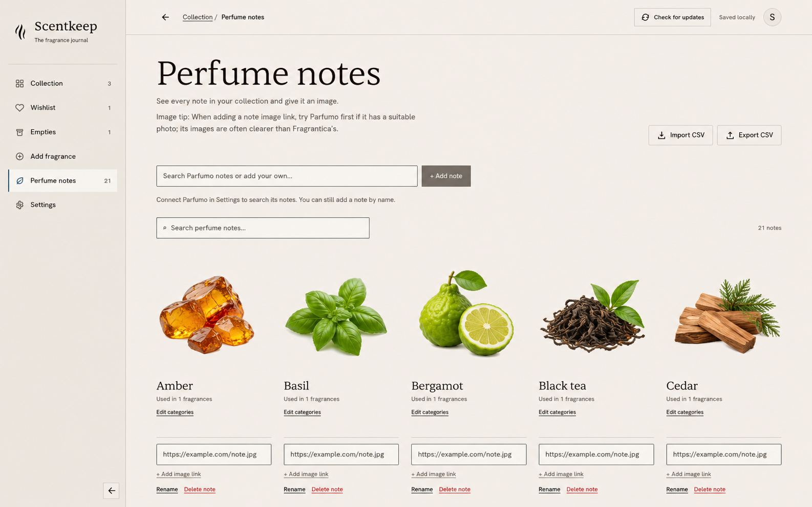
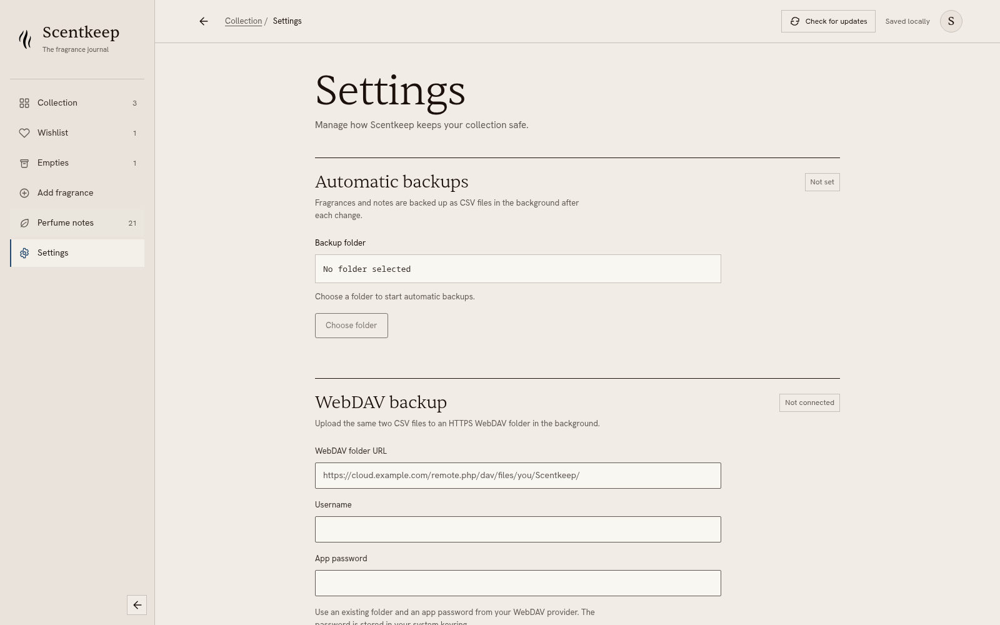

Finish here
Let the first device upload its latest CSV backups.
A private desktop journal for every fragrance you want to remember.
Windows, macOS and Linux

Owned scents, wish-list finds and empties stay searchable in one collection.

Keep the facts, the note pyramid and your own impressions together.
Search its note catalogue, save useful metadata and keep manual entry available.

Connect when you want faster note entry, source links and images from Parfumo.
Your password stays on Parfumo. Scentkeep stores the browser session in your system keyring.
If Cloudflare blocks the connection, reset the embedded browser or continue adding notes by name.
Keep the same readable fragrance and note CSV files beyond this computer.
Scentkeep keeps the app password in your system keyring and uploads backups after changes.

Use one WebDAV folder as the handoff point for each Scentkeep installation.
Let the first device upload its latest CSV backups.
Point the next device at the same WebDAV folder.
Choose Sync from WebDAV before making changes.
This is a deliberate CSV handoff, not live collaborative editing. Sync before switching devices.
Your collection is local. Scentkeep can keep readable CSV copies nearby.
GitHub has a package for every supported system.
Download the latest releaseWindows and macOS may require unsigned-installer confirmation.